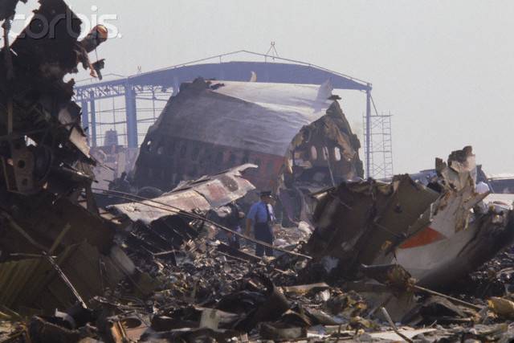

What Happend to Western Airlines DC-10 Flight 2605?
Podcasts About The Incident

On the morning of October 31, 1979 the jumbo jet was on final approach at Benito Juarez International Airport at Mexico City and things were about to go very wrong.
This site is dedicated to the memory of the crew and passengers of this doomed aircraft and is witness to the facts and events surrounding this incident
This site is dedicated to the memory of the crew and passengers of this doomed aircraft and is witness to the facts and events surrounding this incident
About 0541 Mexican Central Time Western Airlines DC-10 Flight 2605 was making an approach to the airport in reported VFR conditions when it
touched down on the dirt on the left of the edge of Runway 23 Left, which was closed to traffic.
A missed approach had been initiated. During the maneuver the aircraft struck a loaded dump truck with its extented right landing gear. The aircraft continued to fly for another 23 heart wrenching seconds before impacting into airport buildings, ground equipment and an adjacent neighborhood. Ninty-eight people were killed, amoung them were 11 crew members.
A missed approach had been initiated. During the maneuver the aircraft struck a loaded dump truck with its extented right landing gear. The aircraft continued to fly for another 23 heart wrenching seconds before impacting into airport buildings, ground equipment and an adjacent neighborhood. Ninty-eight people were killed, amoung them were 11 crew members.

On-site investigation of this terrible tragedy was conducted under the auspices of Servicio a La Navegacion en el Espacio Aereo Mexicano (SENEAM), the Mexican equivalent of the FAA.
Their conclusion? "Error de Pilotos."
Yet, serious faults were committed during this "official" investigation.
No U.S. investigator was allowed on the crash site nor allowed to investigate the wreckage or airport facilities. Why?
What did those with a vested interest have to hide?
Remembering Flight 2605's crew


As the surviving Flight Attendant aboard WAL Flt. 2605 I participated in an indepth investigation by ABC News 20/20 along with retired WAL Captain Ralph Baxter.
What Happened to Flight 2605?" aired nation wide on January 15, 1988.
If you wish to view this informative episode you may contact me at
tresbros@yahoo.com
and I will forward you the link. I will not post it publicly out of respect for the families
-- Eduardo Valenciana
-- Eduardo Valenciana
Contact me to view an 18 minute indepth coverage of the crash details.
tresbros@yahoo.com
tresbros@yahoo.com